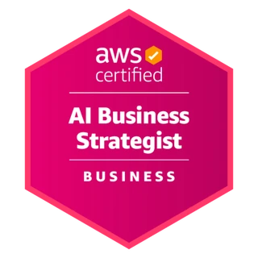
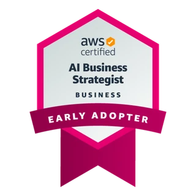

Ciberseguridad Agéntica: OWASP Top 10 LLM y Agentic AI Threats
Python Quito
Material del tallerAlexander Saravia
Tech Lead · Principal AI Architect · Quito, Ecuador
Llevo la IA generativa y agéntica del prototipo a producción a escala organizacional, y diseño la arquitectura y el gobierno que le permiten crecer con seguridad en toda la organización. Estrategia, arquitectura y código en la misma conversación.
FELABAN 2026 · 1.er lugar LatAm
Innovación con IA
2 publicaciones IEEE
Deep learning aplicado
Patente publicada
Edge AI con visión 3D


AWS Certified AI Business Strategist
Entre los primeros en certificarse

01Impacto en producción
Estrategia, arquitectura y delivery. Una sola conversación de principio a fin.
Diseñé y dirigí el agente de IA generativa del banco como arquitecto y líder técnico de un equipo multidisciplinario de 10 personas. El personal de más de 200 agencias encuentra la respuesta para un cliente en segundos en lugar de unos 20 minutos, y todas dan la misma información actualizada.
Portafolio de más de 10 iniciativas priorizado en cuatro etapas: viabilidad, caso de negocio, presupuesto y entrega. Casos de inversión con TCO completo, presentados a la alta dirección.
Ver en la trayectoria 02 / ARCHITECTURESentamos las bases de la IA agéntica: arquitectura de referencia para mallas de agentes, MCP/A2A y ontologías (grafos de conocimiento) como contexto para los agentes. Referencias multinube en AWS, Azure y GCP.
Ver en la trayectoria 03 / TRUSTGobierno y auditoría de IA sobre ISO/IEC 42001, alineados con NIST AI RMF, COSO y el EU AI Act. Seguridad de agentes con OWASP Top 10 para LLM y aplicaciones agénticas.
Ver en la trayectoria02Trayectoria
03Cuaderno de laboratorio
Taller práctico de ciberseguridad agéntica: un escenario del OWASP Top 10 para LLM y Agentic AI Threats por rama, con permisos, supervisión humana y defensa frente a prompt injection.
Agente de LangChain conectado a un servidor MCP remoto, con un LLM local en Docker. Patrones para unir agentes, herramientas y datos sin perder control.
Ruta de formación en IA, desde los fundamentos hasta arquitecturas flexibles y escalables. Lo que enseño en clase, ordenado para que cualquiera lo siga.
04Charlas, clases y comunidad
Talleres, conferencias y cinco años liderando comunidad de IA en Quito.
Python Quito
Material del tallerPonente: avances del equipo de IA generativa. Banco Pichincha con AWS.
Panelista junto a ponentes internacionales de tinyML
Deep learning y Edge AI
FLISOL Loja
MaterialCiencia de Datos Ecuador: Python, SQL, ML y deep learning
Mentor en Edge AI y embajador ante NVIDIA Deep Learning Institute. 11 proyectos en 3 meses (2020).
Curso de IoT con Raspberry PiDesde 2019, en fotos
Ver la línea de tiempo completa05Notas
06El sistema detrás del sistema
Trabajo en la intersección entre arquitectura empresarial, ciencia de datos e inteligencia artificial. Lidero equipos técnicos multidisciplinarios y llevo cada decisión desde el caso de negocio hasta la operación.
Antes de la ola generativa ya construía con deep learning, visión 3D y Edge AI: una patente publicada, dos publicaciones IEEE y estudios de maestría en Inteligencia Computacional en COPPE/UFRJ (Brasil).
Fuera del código
Fuera del código, en fotos
Montaña, XC, off-road y metal: donde se recarga la curiosidad.
07Contacto
Escribo y comparto sobre arquitectura agéntica, gobierno y seguridad de IA. Estos son mis únicos perfiles oficiales.
Terminal personal — escribe help para ver los comandos.